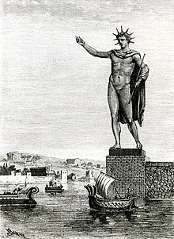

| The Colossus of Rhodes was a gigantic 33-metre-high bronze statue of the sun god Helios which stood by the harbour of that city from c. 280 BCE. Rhodes was then one of the most important trading ports in the ancient Mediterranean and the statue was considered one of the Seven Wonders of the Ancient World.
Made by the local sculptor Chares using sheets of bronze, the statue soon appeared on contemporary travel writer's lists of must-see sights but sadly, the giant Helios did not last long. Toppled by an earthquake in 228 or 226 BCE, its massive broken pieces cluttered the docks of Rhodes for a millennium before being melted down as scrap in the mid-7th century CE.
Helios & Rhodes
Helios was the god of the Sun, offspring of the Titans Hyperion and Theia. Not specifically the subject of a widespread cult across Greece, Plato informs us in his Symposium and other works that many people, including Socrates, would greet the Sun and offer prayers each day. One place Helios was particularly worshipped was at Rhodes, the largest of the Dodecanese islands of Greece in the eastern Mediterranean. There he was the most important deity, their patron god, and honoured by the Halieia festival, the highlight of the island's religious calendar and a Pan-Hellenic games much like the ancient Olympic Games. Indeed, in the island's founding mythology, its very name derives from the nymph Rhodos, who bore seven sons to Helios. In the Hellenistic period (the 4th to 1st century BCE), Helios and the god Apollo would become practically synonymous.The city of Rhodes, with its five harbours, was ideally placed on the island of the same name to prosper from trade during the Hellenistic domination of the Mediterranean under Alexander the Great's successors, especially when more and more cities were established in the East. The island's wealth and strategic position on trade routes did not go unnoticed by ambitious foreign rulers. Antigonus I (c. 382 - 301 BCE), one of Alexander's successors who controlled Macedon and northern Greece, was one such ruler, and he sent his son Demetrius I of Macedon (c. 336 - c. 282 BCE) to attack Rhodes in 305-4 BCE. The island's recent alliance with Antigonus' rival Ptolemy I (c. 366 - 282 BCE) in Egypt was another reason to attack Rhodes and neutralise its powerful naval fleet. |  |